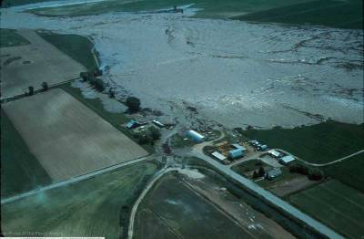

History of Rexburg
Founding of Rexburg
The city of Rexburg was founded in March 1883 when an intrepid group of pioneers decided to settle along the banks of the Teton River. They had been sent by church leaders in Salt Lake City, under the direction of Thomas E. Ricks, to settle the Upper Snake River Valley. The new community, named Rexburg after their leader (Ricks being German for Rex or King) quickly attracted men and women eager to bring industry and civilization to the West. By the time Idaho entered the Union as the 43rd state in 1890, Rexburg was the second largest city in the state.
Teton Dam Flood
On Saturday, June 5, 1976, The Teton Dam gave way allowing 2,000,000 cubic feet per second through the breach floodingthe surrounding area. The Teton River flows through the industrial, commercial, and residential districts of north Rexburg. A significant reason for the massive damage in the community was the location of a lumber yard directly upstream. When the flood waters hit, thousands of logs were washed into town. Dozens of them hit a bulk gasoline-storage tank a few hundred yards away. The gasoline ignited and sent flaming slicks adrift on the racing water. Disaster victims filed over 7,563 claims for a total of $322 million.
Places to Visit
National parks
Rexburg is a short drive from Yellowstone and the Grand Tetons. Perfect for families looking to have adventures and create new memories. Eastern Idaho is an unexpected paradise for experiencing the diverse beauty of the Rocky Mountains and Snake River Plain.
Legacy Flight Museum
The Legacy Flight Museum was founded in 2006. The goal of the museum’s volunteers is to give guests the opportunity to see up close and personal some of the aircraft that United States Military Veterans flew as they served our country and provided us with the freedoms that we enjoy today.